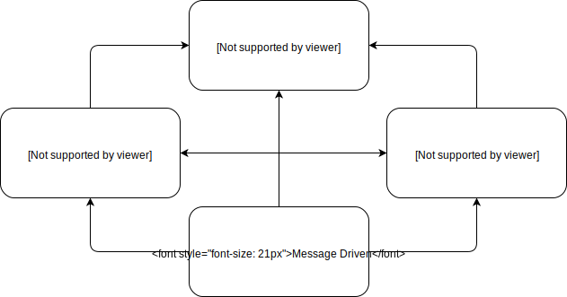
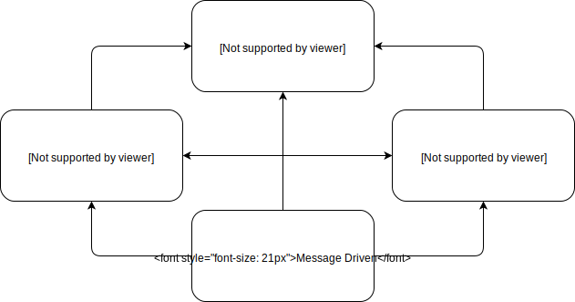
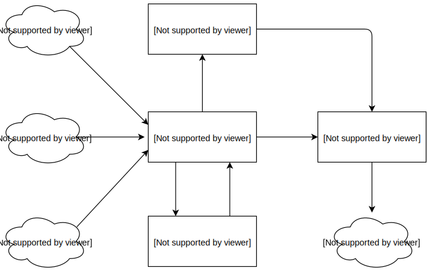

Main characteristics

Check out the official website: www.reactivemanifesto.org


More info in our website: www.codestar.nl
 Scala
Scala
 Akka
Akka
 Spark
Spark
 Kafka
Kafka
 TypeScript
TypeScript
 React
React
 Redux
Redux
 Angular
Angular
 Docker
Docker
 Mesos
Mesos
 Kubernetes
Kubernetes
 AWS
AWS
Organisations need a consistent approach to deal with these challenges.

Check out the official website: www.reactivemanifesto.org
It ensures loose coupling and establish boundaries between components.

A media company that collects all kinds of sport related data.
Implementation of an ad hoc application for
Winter Olympics 2018 in Pyeongchang, South Korea.

Financial services provider for churches.
Implementation of a completely new payment platform
for a conservative and old fashioned organisation.


Our meetup group: Codestar Night (www.meetup.com/Code-Star-Night)
Thank you!